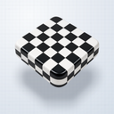
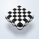
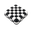
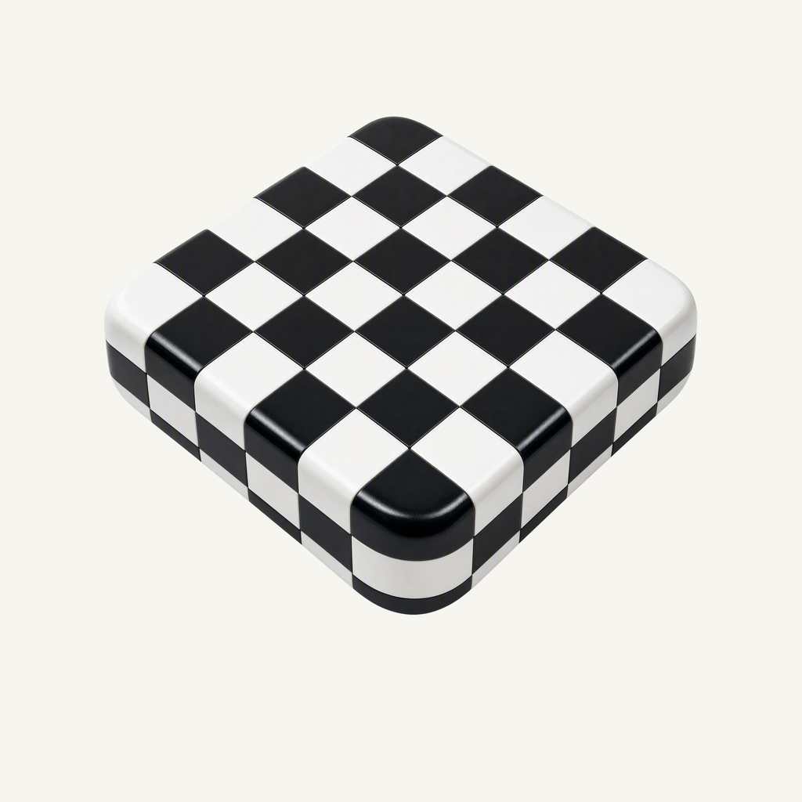
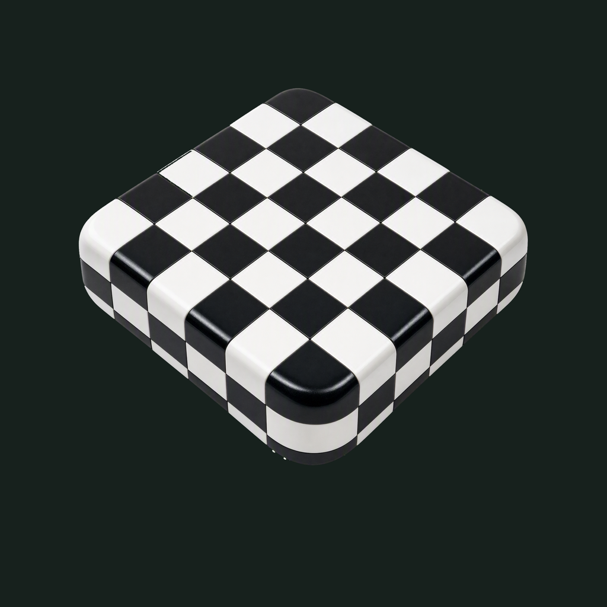

01 / Composition
A suspended building block
A complete rounded square brick seen from an elevated three-quarter view, uniformly inset from every corner. The independent projected shadow makes its weight and hover gap legible.
Material family · Refined identity
Black and white, shaped by light.
Adopted redesign · finishing 01
Native 2048 × 2048
01 / Composition
A complete rounded square brick seen from an elevated three-quarter view, uniformly inset from every corner. The independent projected shadow makes its weight and hover gap legible.
02 / Drawing
Pure black and white inlays carry the identity. Physical ceramic shading, controlled reflections and soft bevels provide detail without a pixel-art treatment; white cells remain solid after extraction.
03 / Presentation
Cool pale drafting paper uses fine Cartesian cells, larger construction divisions, registration crosses and a short ruler. Its separate soft floor shadow never enters transparent UI marks.
Presentation tiles at 128/64 px; transparent artwork for small app and browser marks.



At 128/64 px the checker rhythm, rounded thickness and hover shadow remain clear. At 32/24/16 px the transparent mark retains the alternating block silhouette; fine bevel reflections and drafting lines are deliberately left to the large presentation.
A designed background, with colors sampled from the exact native artwork.
Select a swatch to copy its hex value. The Dotty UI primary (#16181D) remains a separate product color.
One transparent foreground, checked on two contrasting backgrounds.


Azure Foundry · gpt-image-2 · one request · native 2048 × 2048
Loading study text…
Premium tactile finish, restrained presentation and negative space only. No animal subject, no copied geometry, no transferred background stencil. Premium tactile finish, restrained presentation and negative space only. No animal subject, no copied geometry, no transferred background stencil.


{kind=link}
{kind=link}
{kind=link}
{kind=link}
{kind=link}